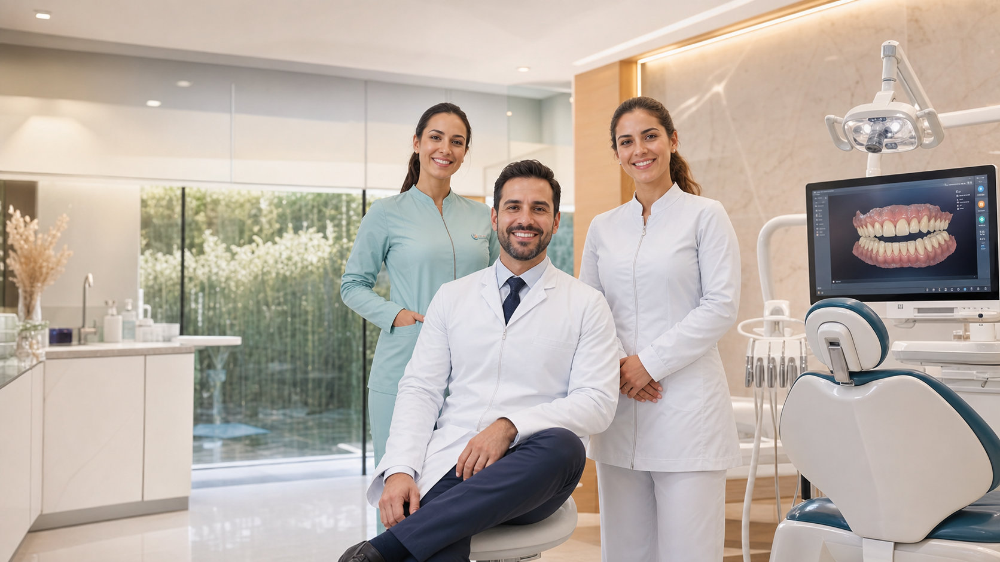

Ortodontia e alinhadores
Planejamento digital para alinhar os dentes com previsibilidade, conforto e acompanhamento próximo.

Desde 2002 em Jaguariúna
Estrutura moderna, estacionamento próprio e uma equipe especializada para cuidar da sua saúde bucal com atendimento personalizado.
Fundada pelos dentistas Dr. Giovane Martins e Dra. Valdênia Martins, a clínica reúne estrutura ampla, equipamentos de última geração e uma equipe preparada para orientar cada etapa do cuidado odontológico.
Planejamento digital para alinhar os dentes com previsibilidade, conforto e acompanhamento próximo.
Protocolos estéticos para suavizar manchas e deixar o sorriso mais claro de forma responsável.
Reabilitação para substituir dentes perdidos e recuperar função mastigatória, estética e confiança.
Cuidado cirúrgico com orientação clara, preparo criterioso e acolhimento em todas as fases.
Tratamentos personalizados para harmonizar cor, forma e proporção de acordo com o seu rosto.
Consultas periódicas para manter o tratamento saudável e identificar necessidades com antecedência.
O scanner digital iTero ajuda a mapear a arcada com precisão, melhora a comunicação entre dentista e paciente e facilita decisões mais conscientes sobre o plano de tratamento.
"Ótimos profissionais, atendimento humanizado. O escaneamento digital foi muito esclarecedor para visualizar o tratamento."
"Clínica odontológica com atendimento muito bom e humanizado, profissionais dedicados para melhorar nosso sorriso."
Rua Zenaide Ferreira Machado, 159, Jardim IK, Jaguariúna - SP, 13911-300.
Segunda a sexta08:00 - 19:00
SábadoFechado
DomingoFechado
Atendimento com cartão de crédito, débito, NFC e planos de pagamento.